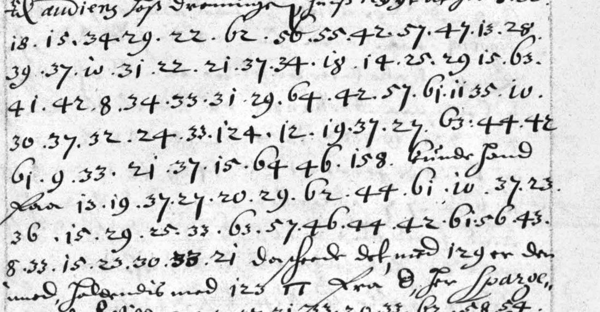

At a glanceKey from adjacent plaintext · partial (46% of the cipher)
- The document
- The extract register of the outgoing letters of Peder Juel, Danish resident in Stockholm, 1647–49. Where a letter had a secret passage the secretary entered it as dotted runs of numbers. This page covers p. 5: a short run in the entry to King Christian IV and a run of 13 lines in the entry to the chancellor Christen Thomesen Sehested, both of 20 November 1647.
- Where
- Rigsarkivet, Copenhagen, TKUA, Speciel del, Sverige: Peder Juels og Mogens Høegs gesandtskabsarkiver, Ekstraktprotokol 1647–49 (film C.195), Arkivalieronline unit 261585, image 5; catalogue entry 2553. Not on DECODE.
- The cipher
- A homophonic table of numbers 8 to 64 for Danish, in four alphabetical runs (so most letters have two numbers), with six numbers that are nulls and three-digit numbers that are a nomenclator.
- How it was read
- The table was rebuilt from the interlinear glosses of the time on two of Juel’s own letters of 1648, frozen, and tested on a third glossed letter: 23 of 25 glossed numbers agree, against at most 7 for 2,000 shuffled keys.
- What it says
- A strong war council is held, and they would gladly have a named man as general in a named place; he could become General of the Realm. Then a run about Sparre and quarters in Holstein that does not read.
- Still open
- The two last sentences, the nomenclator (eight code tokens), six unidentified signs, the numbers 11, 12 and 13, and a second entry (p. 6, to Hannibal Sehested) in another set of numbers that is not solved. The test was not blind and its order is by the contributor’s record.
- Credit
- Transcription, table and reading by WAINUT (a Dutch AI company) with AI language-model agents from the Rigsarkivet images; no human palaeographer checked the text. The project re-ran the held-out test, compared images 5 and 118 and counted the share strictly.
01 The register
Peder Juel was the Danish resident in Stockholm. A bound register (“Extract offver alle afgangne Missiver Breffve de anno 1647”) summarises each letter he sent in Danish; where the letter had a secret passage, the register gives it as a dotted run of numbers with nothing written over or beside it. Fryxell printed a Swedish abstract of the register in 1836 without the cipher passages. The register has entries of 20 November 1647 to the King, to the chancellor Christen Thomesen Sehested and, in a different set of numbers, to Hannibal Sehested.
The top of p. 5 carries a short run that the catalogue gave to the chancellor; the register puts it at the end of the entry to the King of the same day. Below it, the entry to the chancellor Christen Thomesen of the same date has 13 lines of numbers broken by a few clear words of the register.

02 The 8-64 table
The letters of 1648 that Juel sent to the chancellor carry a decipherment of the time between the lines, and those glosses show the system: four runs of numbers, 14–27 for k up to y, 28–37 for k down to a, 38–49 for a up to m, 50–61 for z down to n, so most letters have two numbers (a 37 and 38, e 33 and 42, n 17 and 61, r 21 and 57, s 22 and 56). The numbers 8, 9, 10, 62, 63 and 64 carry no glossed letter and stand mostly between words, but 63 and 64 also stand inside two words (“wil.de”, “gi.ern”). In the build glosses 19 is t, 20 is s and 24 is o where the run would give p, q and u, and 11, 12 and 13 are not glossed at all. Three-digit numbers (83 to 158 here) are a nomenclator; none has a value.
The table was built from 82 gloss pairs on images 117 (a letter of early March 1648) and 121 (8 July 1648) of unit 261575; values not glossed in those two letters were filled from the run pattern and are marked as such in key_frozen.tsv (30 h, 35 c, 39 b, 41 d and others). It was frozen before the test below, and the order rests on the contributor’s record: the work folder keeps no history, and file times show a pairs file saved later than the key (the notes record that the pairs agree with every value of the frozen key marked as glossed).
03 The test
Juel’s letter of 11 March 1648 (image 118), glossed in the same way, was not used to build the table. Its 25 glossed numbers decrypt as the gloss for 23: the gloss “w i w e k e” over 10.25.29.25.33.14.33 (Vibeke Kruse) and “c k a u”, “a l e f e l” over the next runs were read again on the image at integration. The two misses are 24 (the gloss says u, the table o) and 41 (the gloss reads g or d, the table d). Two thousand random permutations of the table’s values agree on 1.1 of the 25 on average and 7 at best. Three hits are values filled from the run pattern, and two are 25 = w where the build glosses said u or n; without those two the score is 21 of 23.
Two limits belong with that figure. Image 118 was looked at before the table was frozen (its “Wiweke” gloss was read while the run pattern was worked out), so the test is not blind. And it tests the table on another letter of 1648 to the same man, not on the register itself; the register’s own words are the test of that (next section). The project’s statistical check on the 111 read tokens of p. 5 (63 letters) returns the verdict “too short”.
04 The reading
til audiens hos dronningen … at for holdis sterk [krigs]rad, ok wilde de giern{e} hafue [124] […] general i [158]. kunde hand fra […] at bliwe rigens felther{re}. da horde det med [129] er den med folgendis med [123] … […] [quarteer] i holsten. …
In English: “[on the audience with the Queen … that] a strong [war] council is held, and they would gladly have 124 […] general in 158. He could […] become General of the Realm (Rigens Feltherre).” Then, with codes and holes: something with 129 and 123, a Sparre, and [quarters] in Holstein. The first two sentences are Danish with a clear sense. The notes place them in the winter of 1647–48, when Sweden was looking for a commander for its army in Germany, and name no candidate for 124 and 158; none is claimed here. (That background is not from the sources and was not checked here.) The run to the King above it reads, with four codes: “among them 83 and 84 would gladly have 124 as general in 158 again, but he cannot be persuaded”.
Counted by the README rule, strictly, on this page’s documents: the chancellor entry has 26 cipher words, 14 verbatim from the signs, 4 with a marked repair, 3 guesses and 5 holes; the king run has 3 cipher words, all verbatim. With the 8 code tokens (four in each) counted as holes, 17 of 37 tokens are read, 45.9%; on the 29 cipher words alone 58.6%. The contributor’s own estimate, 60%, counted the p. 115 passage as well (see below) and not the codes. Both texts are read in part. The sentence checker puts the reading of the chancellor entry at 0.308, below its 0.45 line, because the last two sentences are mostly holes (“trgese”, “quartg[11]bb”, “fyle”, “forlagrdit aggrop”); the first two read, and a reader of the Danish gave it grade B.
05 Two other sets of numbers
The entry to Hannibal Sehested on p. 6 is 30 numbers from 3 to 32 with two codes (86, 208). Vibe’s old cipher and new alphabet, the 8-64 table shifted by −40 to +40 and plain rank ciphers over 23- and 25-letter alphabets were tried; none gives Danish. It is too short for a ciphertext-only attack and no glossed sibling was seen, so it is not solved, and this page claims no reading of it.
The entry to Peder Vibe of 2 September 1648 (p. 115) is in neither of these: it is in Peder Vibe’s old cipher, with its own page, Vibe to Juel, the old cipher.
06 What remains uncertain
- 11, 12 and 13 in the table have no gloss (no key material). They stand in two runs that do not read and in giern{[11]c/e}, where two signs are replaced by one letter; the word is certain from context, the signs are not explained.
- The second digit of the group after “62” in line 2 (sterk) is crossed by a flourish: 50 or 56 (illegible). Read as 56 the word is verbatim, as 50 it decodes z; holsten is read 56, so a claim that 50 is s would rest on this one place.
- The last two sentences of the entry do not read: copyist errors or unclear figures in the register are possible, and the original letter of 20 November 1647 is not among the images 115–135 of unit 261575.
- The nomenclator (83, 84, 123, 124, 129, 158) and the six signs TT, Θ, ∞, Ψ, Δ and ш of the entry have no list; none is identified.
- The table was tested on a letter seen before the freeze, one letter only, and its freezing is by the contributor’s record; no other glossed letter of this table was found among the images 115–135.
- One independent AI reader copied the signs of p. 5 from its own crops (about 153 of 156 numbers agree with the transcription) and graded the reading; at integration the project compared all 13 rows with the image and found no disagreement. No human palaeographer has checked the signs or the Danish.
Full texts
The transcription and the decryption of every document on this page, so that the reading can be used and checked. Short files are shown here; all are in the repository.
p. 5 top, to the King, 20 Nov 1647 read in part
Among them 83 and 84 would gladly have 124 as general in 158 again, but he cannot be persuaded.
Builds coherent sentences, but under the read bar of 95% of words read as sense (43% here); the holes are marked in the reading.
Transcription
# Reconciled: pass 1 and pass 2 agree on every number.
{blant dennem} #X 83 {och} 84 {Vilde gierne hafue} 124 9 / 23 29 15 31 33 17 64 42 62 57 38 48 / 8 29 158 {igien men kan hand ey dertil ofuertalles}Reading
# Reading: Peder Juel to King Christian IV, Stockholm 20 Nov 1647 (register p. 5, top)
Danish. Clear words of the register in `<...>`. Marks: `{x/y}` value changed, `{+a}` letter added, `[?w|m]` guess for the
mechanical letters m, `[...|m]` hole over m, `[n]` code.
## Marked reading
<blant dennem> [83] <och> [84] <Vilde gierne hafue> [124] til general i [158] <igien, men kan hand ey dertil ofuertalles.>
## Plain
blant dennem 83 och 84 vilde gierne hafue 124 til general i 158 igien, men kan hand ey dertil ofuertalles.Translation
# Translation: Juel to the King, 20 Nov 1647 (register p. 5, top) Among them, 83 and 84 would gladly have 124 **as general in 158** again, but he cannot be persuaded to it. (Cipher words in bold: "til general i". 83, 84, 124 and 158 are unidentified codes.)
p. 5 entry No. 4, to the chancellor, 20 Nov 1647 read in part
A strong [war] council is held; they would gladly have 124 as general in 158; he could [...] become General of the Realm (Rigens Feltherre); something with Sparre and [quarters] in Holstein.
Builds coherent sentences, but under the read bar of 95% of words read as sense (54% here); the holes are marked in the reading.
Transcription
# Reconciled (settled on the image only):
# line 2 "50|56" ("62 50|56 55"): pass 1 gave 50|56, pass 2 50. The second digit is a small closed loop open at the
# top-left; the solver read it as 0. The blind review of 12 Nov 2026 found that a flourish from the line above crosses the
# digit where a 6's ascender would be, and could not settle it. Left doubtful as 50|56; decrypt.py uses the first reading.
# line 11 "56" ("48 56 55"): both passes and the first reconciliation gave 50. Corrected after the blind review of
# 12 Nov 2026: at 3x the second digit has the tall ascender of this hand's 6 (compare "60" in the same line).
# line 10 "33|53" ("31 33|53 20"): the first digit has a flat top and is crossed by a long stroke (blind review, 12 Nov
# 2026); 33 or 53. decrypt.py uses the first reading. The group stands in a stretch that does not read.
# (These three notes count the "/" breaks of this file, 1 to 14; the notes below keep the line count of the first
# reconciliation.)
# line 8 "33!": a heavy 3 written over another digit; the upper figure reads 33.
# line 9 "57": the first digit has a flat top (pass 2 57|07); no 07 occurs anywhere in the set, and the shape matches the 5
# of "55" in the same line. Transcribed 57.
# line 9 "36!": heavy 36 written over "39"-like figure, separated from the preceding 39 by no dot; transcribed 39 36.
# line 11 "48_": 48 with a short stroke under the 4; transcribed 48.
# The p. 6 head (image 6, line 1) continues this entry with "#TBAR 8 ... 129"; only those two numbers are cipher and they are
# not counted here.
{til audiens hos dronningen ... at for} 8 30 / 18 15 34 29 22 62 50|56 55 42 57 47 13 28 / 39 37 10 31 22 21 37 34 18 14 25 29 15 63 / 41 42 8 34 33 31 29 64 42 57 61 11 35 10 / 30 37 32 24 33 124 12 19 37 27 63 44 42 / 61 9 33 21 37 15 64 46 158 {kunde hand} / {fra} 13 19 37 27 20 29 62 44 61 10 37 23 / 36 15 29 25 33 63 57 46 44 42 61 56 43 / 8 33 15 23 30 33 21 {da horde det med} 129 {er den med folgendis med} 123 #PI {fra} #THETA {for Sparre} / {ris at} #EIGHTLOOP {Will} 8 23 57 31 33|53 20 33 62 58 54 / 38 57 55 44 11 39 36 46 45 60 48 56 55 / 42 61 {da} #PSI {for} #DELTA 9 22 18 16 63 53 46 48 41 / 42 43 51 48 42 #SHA 10 32 18 21 15 37 31 / 21 34 29 23 64 38 44 44 57 60 59 {med ham}Decryption
.holdis.zterk[?13]kba.gsradokwil.de.degi.ern[?11]c.hafoe[124][?12]tay.gen.eral.i[158] [?13]taysi.gn.atbliwe.rigensf.elther [129] [123] .trgese.quartg[?11]bbiholsten .som.wildefyle .forlagrdit.aggrop
Reading
# Reading: Peder Juel to the chancellor Christen Thomesen Sehested, Stockholm 20 Nov 1647 (register p. 5, entry No. 4)
Danish. Clear words of the register in `<...>`. Marks as in `reading_king.md`.
## Marked reading
<til audiens hos dronningen ... at for> holdis {z/s}terk [?krigs|[13]kbags]rad, ok wilde de giern{[11]c/e} haf{o/u}e [124] [...|[12]tay] general i [158].
<kunde hand fra> [...|[13]taysign] at bliwe rigens felther{+re}.
<da horde det med> [129] <er den med folgendis med> [123] <TT fra Θ for Sparre ris at ∞ Will> [...|trgese] [?quarteer|quartg[11]bb] i holsten.
<da Ψ for Δ> som wilde [?følge|fyle] <Ш> [...|forlagrditaggrop] <med ham>.
## Plain
... at for holdis sterk [krigs]rad, ok wilde de gierne hafue 124 [...] general i 158. Kunde hand fra [...] at bliwe Rigens
Feltherre. Da hørde det med 129 er den med følgendis med 123 ... fra ... for Sparre ris, at ... will [...] [quarteer] i
Holsten. Da ... for ... som wilde [følge] ... [...] med ham.
Notes. In "sterk" the group is doubtful, `50|56` (blind review, 12 Nov 2026): read as 50 it decodes z by the run
pattern where s is needed, so the change is marked; read as 56 it gives s and the word is verbatim. In "holsten" the
group is 56 (corrected after the blind review; first read 50), so the word is verbatim. In "trgese" one group is `33|53`. `24` is frozen as o from the build glosses; here (hafue) and in
the held-out letter it stands for u. 11, 12 and 13 have no gloss; 13 19 37 27 20 29 44 61 ("? t a y s i g n") and
12 19 37 27 ("? t a y") are left open.Translation
# Translation: Juel to the chancellor, 20 Nov 1647 (register p. 5, entry No. 4) [On the audience with the Queen ... that] a strong [war] council is held, and they would gladly have 124 [...] general in 158. He could [...] become General of the Realm (Rigens Feltherre). Then it went with 129 [...] with 123 ... from ... for Sparre ... that ... will [...] [quarters] in Holstein. Then ... for ... who would [follow] ... [...] with him. Holes as in the reading: `[...]` unread, `[word]` guess. 123, 124, 129, 158 are unidentified codes; the signs TT, Θ, ∞, Ψ, Δ and Ш are unidentified.
p. 6 entry No. 4, to Hannibal Sehested, 20 Nov 1647 decoded, not read
Not solved: 30 numbers in a 3-32 set; no tested system gives Danish. The file shown is a failed trial, not a decryption.
A mechanical decode with holes in most sentences: shown so that the transcription and the key can be checked and improved, not as a reading.
Transcription
# Reconciled. Pass 1 and pass 2 agree on all 30 numbers after "fra". "27" after "fra" may be a date ("fra 27"); it is kept
# in the run. The "bo"/"60" after "med" (line 7) is read as the clear word "bo." (Danish "bo", estate) and not counted.
{fra} 27 / 4 3 7 31 19 7 23 13 4 32 12 19 8 12 23 6 / {och vilde de gierne at} 26 14 9 12 13 30 5 19 / 11 6 10 27 7 {skulde were ...} 208Key: key.tsv, key_frozen.tsv
07 Sources
- Rigsarkivet, Copenhagen, TKUA, Speciel del, Sverige: Peder Juels og Mogens Høegs gesandtskabsarkiver, Ekstraktprotokol over relationer, indlæg og andre udgående skrivelser 1647–49 (film label C.195), Arkivalieronline epid 19852819, unit 261585, images 5 and 6; glossed letters to the chancellor, Relationer 1645–60, unit 261575, images 117, 118 and 121. Images from api.rigsarkivet.dk, fetched at integration on 12 November 2026; the host refused nothing.
- Fryxell, Handlingar rörande Sveriges historia 1 (1836), which prints a Swedish abstract of the register without the cipher passages; catalogue entry 2553, with its vetting of 11 November 2026 (not on DECODE, Tomokiyo or in Lasry).
- Transcription, table, readings and scripts by WAINUT (pull request #457), in
targets/juel1647.
The table, the transcriptions, the readings and the checks are in targets/juel1647.
Cite this page
WAINUT and Daniel Bourdeau, “Peder Juel’s register of outgoing letters, Stockholm, November 1647: the entry to the chancellor”, Cyphersolver, posted 12 November 2026, https://cyphersolver.com/juel1647.html.